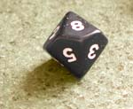

Selecting a sample manually
When choosing a random sample, each population member must have the same chance of being included in the sample. How can we select a random sample in practice? One method of selecting a random sample of size n is...
This method is however impractical for large populations.
Random digits
An alternative method of selecting a random sample involves generating random digits (0, 1, ..., 9). There are several ways to generate random digits such that each has the same chance of appearing.
|
 |
Concatenating 2 or more of these random digits gives a larger random number.
(In this course, we expect you to use a computer or calculator to generate random digits.)
Click the button Generate digit to generate a random digit.
Concatenating three such random digits gives a random number between 0 and 999. Click Generate value to find a random number in this range.
Selecting the sample
To select a random sample without replacement using random numbers, we must first obtain a list of the population members. This list is called the sampling frame. We then proceed as follows:
Note that values are 'rejected' in step 3 for two different reasons.
The proportion of rejected values therefore depends on the population size and the relative size of the sample and population.
The diagram below illustrates sampling without replacement from a population of 56 individuals. They have been numbered from 0 to 55.
Click Random index. If the resulting two digits are between 0 and 55, the corresponding individual is added to the sample. Otherwise, an error message appears and a new random value must be generated.
Repeat several times to add more individuals to the sample. Note that
Instructions for using random number tables, and Excel to generate random numbers can be found in the Study Guide.